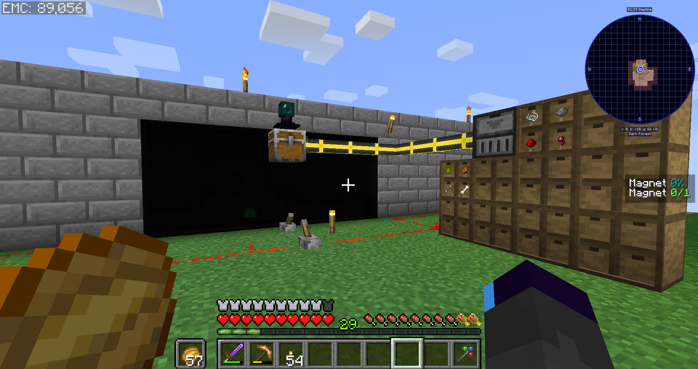
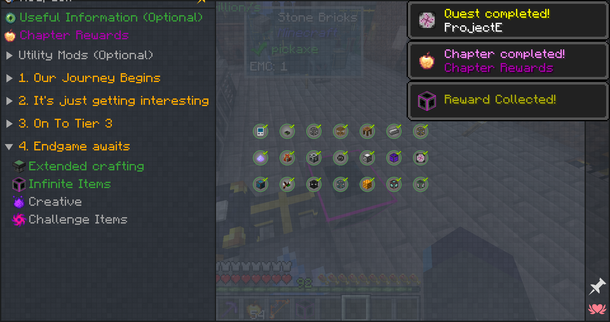

Modpack Author: TomBombadil4real & ab3r0n
Origin: Modpack Link
Versions: MC = 1.16.5 - Pack = 1.0.4
Presentation
While waiting for some projects to progress, I ended up in a dead week, so I thought it would be the perfect moment to play a small modpack and decompress. It seemed to be in a completed state, so perfect after the last one… Welcome to Bubble Corp.
Overview
EMStart
Starting on a skyblock, you have a cobble gen and a sapling already set up for you, and you’re given a transmutation table from the start. Clearly the pack will make you use EMC without shying away from it. That means a lot of the grind won’t be present, and progressing to new materials will be the course. A lot of quests seem to be open at the start, but most are not yet relevant, and a large page is only here to showcase some optional mods which is appreciated.
With my luck, the one tree I grew did not give out saplings, and I didn’t think fast enough to duplicate it through EMC first… Thankfully I got the wood and can continue the progression normally with cobble crushing.
Unlike many other packs, this time it’s really quick to reach the smelter and obtain the first meaningful resource generator. I first have to do some manually, but after unlocking iron I can setup automated crafting and hopper transfer to continue producing decent EMC.
With the bonemeal, I can get seeds and setup bonsai pots for the various plants that don’t have EMC. It allows me to make some animal baits too, clearing the end of the starter quests! With luck, one of the quests gave me a slimetree sapling, which allowed me to make the plant resource generator, despite still missing regular saplings.
Through the Bottleneck
My focus turns to machinery, starting with immersive engineering with coal coke, steel, and then making a metal press. This gives me some windmill power generation to supply my basic needs, but I soon notice the bottleneck in progression requires me getting a whole lot more EMC.
I renew my setup by upgrading to an overworld generator and make a bigger wall, boosting the production speed. I still have some time to wait before I reach the goal, so meanwhile I upgrade what I can upgrade in my base, I try to quickstart botania but no gold yet so I can’t do much aside getting snow.
Then while perusing the different quest tabs, I notice I’ll need to have a mob farm setup for pink slime down the line, so I build a standard 3 way fan mob farm with mob grinding utils, the best mod for mob farms! It’s still really rudimentary and can’t capture experience yet, but I got some ender pearls to have item vacuuming and that’s all I could really need for now.

This is perfect timing as just when my mob farm is getting functional, I’m hitting the last EMC needed for the big progression gate and whole new materials! Obtaining so many new resources including diamonds and gold opens up the biggest chapter of the modpack by far, with many mods I could branch out it.
Connecting the Pots
First I upgrade my EMC generator wall to make diamond blocks, as it’s the most efficient EMC generation for now. Then I quickly obtain the various new alloys that will be needed for machine crafting, using that to build a centrifuge for obtaining blaze powder and rods despite not having real access to it yet.
Getting a bit spread out, I spent a lot of EMC to make myself a transmutation tablet which is really handy to keep moving around. Thanks to my already setup botania mana pool, I can then make some flux dust and use blaze powder with some of my few ender pearls from the mob farm to have a basic flux system and storage.
Having a stable battery system is going to be essential to branch out. While fiddling with the EMC generation, I made the flight ring which finally allows me to safely explore the Nether, and after some fighting, I get all the resources I wanted and can make a nether capsule generation that will passively output in my newly made ender chest.
The network is slowly building, I get the idea to try to hunt for zombie villagers while back at the base, and turns out my MK2 botany pot has finally produced enough inferium essence to make the unlimited crafting crystal, this will ease the crafting of all the useful seeds.
Networking
Now, between the mob farm, the nether gen, the new seeds, my production is really booming, and it is time to link it all up with my flux and ender chest network… into a refined storage! Having less manual crafting with centralized storage is going to be extremely important to continue progressing, so I go through some manual steps until I have a basic system working.
Like always the first pattern made is for crafting patterns, then it keeps developing, meanwhile I spent all the advanced nether capsules I got to have a netherite crafter for unlimited crafting. Thanks to the better storage and autocrafting, I made even more thermopiles, my beloved, for a solid passive power supplying that will keep on growing as I spread my network. Just as this happens, I also get a villager I can cure with the ankh, and it triggers a raid of course…
After a chaotic night fending off compressed evokers (thanks to my luck), calm settles and I now have easy emerald access and a budding network to grow, a whole lot more work awaits and no barrier for now! Skipping through smaller steps, I got a handful more villagers for fun and started on the rest of the chapter 2 mods, making a lot of the botany pots for all kind of useful resources, including the annoying hard to get.
My power generation is starting to weaken a bit, and while I want to add more thermopiles, I should start making the powah version that gets a lot more power for it.
Encapsulation
Turns out, by mixing up the Powah mystical seeds and the MK botany pots, I’m able to go into a loop of making higher tier thermopiles that feed enough energy to use the stronger MK pots that then output insanely fast the resources needed to keep upgrading my Powah machines. Things go even faster thanks to my autocrafting, and after quickly defeating the wither 4 times, I have nether star seeds for easy production.
The final tier of Powah has become the norm, and I now have 4 MK4 pots running thanks to my big thermopile battery. I produce so much I actively need to add more disk space, so I slowly progress in making the 1028 million storage disk while clearing the other quest tabs.
Barely noticing I reach tier 3 because I needed to make the EMC interface to finally have ultimate autocrafting with my EMC, the new resources I obtain are a footnote. Diamond blocks remain the only good EMC source, so I upgrade my tier 2 into intermediate size, and I guess chapter 3 is going to be my focus soon but first, the End.
Well, considering my current power level, it was a walk in the park, after getting the missing resources to clear off some more quests there’s really not much left. The only true mod progression needed at this point are bees, I could have done that sooner, but there was no need until then, and agriculture was more than enough.

Death by a Thousand Stings
I dredge back in my Skyopolis post to remember the efficient bee setup and get some beehives running. It goes quite fast thanks to it, and I can already shoot to the highest tiers of apiary and centrifuge now that I have some honeycombs! It’s time to power grind.
Having all the bees running doesn’t end up particularly difficult to set up, I even make the chaos bee because I wanted to avoid the worst fight. Meanwhile I got just enough to make a watch of time to speed up my power gen tenfold, I love thermopiles. I keep clearing the remaining things, and now it’s clear there is only one thing left… the chaos shard.
I had several chaos bees, but wow was it slow, I guess I should really have spammed chaos bees to have a decent output, I’m still not even a fourth on the way to one shard. So I decide I should try to beat the boss to make it faster, and wow is it time consuming to make all the preparation… After filling the entirety of the module space, I’m thinking that it’s time to go, and after a long flight… yeah I get one shot. I hadn’t made a good melee weapon so the wither spam was unmanageable, so more crafting was needed before trying again. I still die often, but I also remembered I needed to use his own attacks to break the crystals.
It’s still taking forever, I need to upgrade my gear even more, I still have the leftover basic armor pieces when I could use red matter from project E. I also forgot to make the most important shield modules to increase the shield regen… oof. But turns out, it was all a waste of time, the gem armor allowed me to win without dying half the time, I really should have done this first. Though it was a good lesson in the new way of making draconic gear and modules.
Fallout
Now that it got done, I finally have the ultimate machine that creates stacks of anything I put inside, the final challenge is here! I explode my EMC generation and even setup an automatic one while I look into the big recipes, seems like they will require doing stuff in mods that were neglected until now.

Like always I heavily dislike Mekanism, but with infinite power and item duplication, the burden is reasonable. I almost quit for the final 6 challenge items, but looking twice, it would actually be an interesting challenge for crafting resources with none of the grind. A big thanks for NOT having singularities, oh I want to pull my hair with those, they tend to be most unfun to deal with(though some packs use them without abusing on their grind).
First is the creative tank for infinite fluid, though the item duplication allowed me to quickly fill the tanks so it’s mostly here for water sourcing, and to be fair at that point they’re just trophies rather than tools to use. Next is going to be the most complicated one, did I already say that I hate Mekanism? I always thought the mod was overcomplicated with tedious steps, but oh well, it’s always useful to know how to use it before dealing with it in a big pack.
Thankfully I had decent experience already through my E2E expert run and some from Stoneblock 3, so it went fairly smoothly (item duplication I love you)… that is until the reactor part. I was doing alright but started increasing the output and decided to go fly away for some moment, forgetting I hadn’t added any kind of safety lock… Yeah, the steam overflowed and my reactor melted, oops. Honestly I considered loading a backup, but it was hours ago, then I checked again, and figured I knew what to do, and had easy unlimited resources, it wouldn’t be too hard to make a new reactor. The only issue was that I was now in a fully radioactive area, but thanks to the gem armor, I was immortal, so I bore the annoyance and went on with it.
With proper coolant emptying things went smooth, and pretty much none of the rest was of note. The only funny situation was that I couldn’t do the psi resources because I was constantly losing focus from being hurt, so I had to kill myself once, then I finished all the crafting, and thus I won.
Conclusion
I’m glad this time, despite my own mistakes, I managed to end the pack properly. The modpack seems to have been made by two regular but passionate people, so it was interesting to see their vision for it.
The capsule generation system was interesting, though overall it felt underused. Most mods were like that I guess, only a handful truly asked you to get your hands dirty. Meanwhile the endgame was a neat challenge but most of it used mods you hadn’t needed until then, so it felt disconnected.
I feel like I expected a bit more, but I’m not disappointed either, and it’s quite hard to stay innovative with skyblock. I’m content overall, this acted as a refresher on some of my mod knowledge and learning lessons from dumb failures. Use the gem armor…